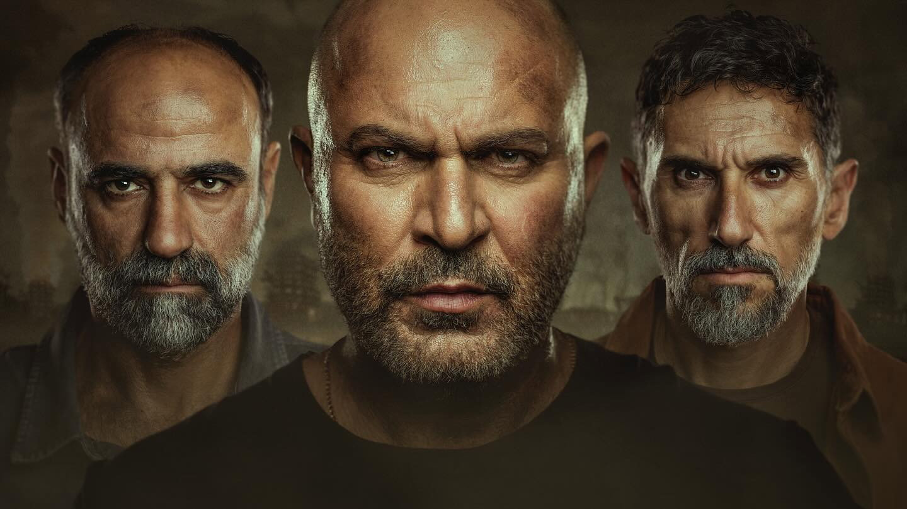

Fauda, Season Five
The fifth season of Fauda (no spoilers) offers, on the surface, more of what we know from the first four seasons: suspense, dialog, anticipation, well crafted plot, and heart-pounding moments.
But only on the surface.
For the first time, the racing heartbeats stem not from what is to come, but from what has already happened. Not from an unknown future, but from a past we do not wish to witness, again.

And the characters, too, are no longer rugged alpha males (and females), they are people living amidst a fracture. That fracture is visible in every single one of them. There are those who can still be saved, where hope still clings, and then there are the other kind, beyond saving. Living and breathing, their heart is beating, yet they are long gone. In the few rare moments they manage to be truly present, we encounter a horror we do not want to see.
The dialogs carry dark humor, yet we do not laugh, the suspense is palpable, yet it is not the plot that keeps us on edge. Every single minute does not move forward but backward, minute after minute, leading up to “the Seventh,” a date that looms constantly, an event we know is inevitably approaching.
This is the genius of Lior Raz and Avi Issacharoff, without explicitly telling us, they have shifted the genre to reveal what this unspoken fracture looks like — the PTSD, the half-life by those who have seen things they can never bear to remember. We too, are going through a parallel process, knowing that the series’ past, or rather, its future, is about to catch up with us.
What is truly amazing is that it isn’t just Israelis watching the series who experience this, but people all over the world.
If anyone truly deserves applause, they are the creators and cast of Fauda, for they take us on an immense emotional journey of bare bones humanity.